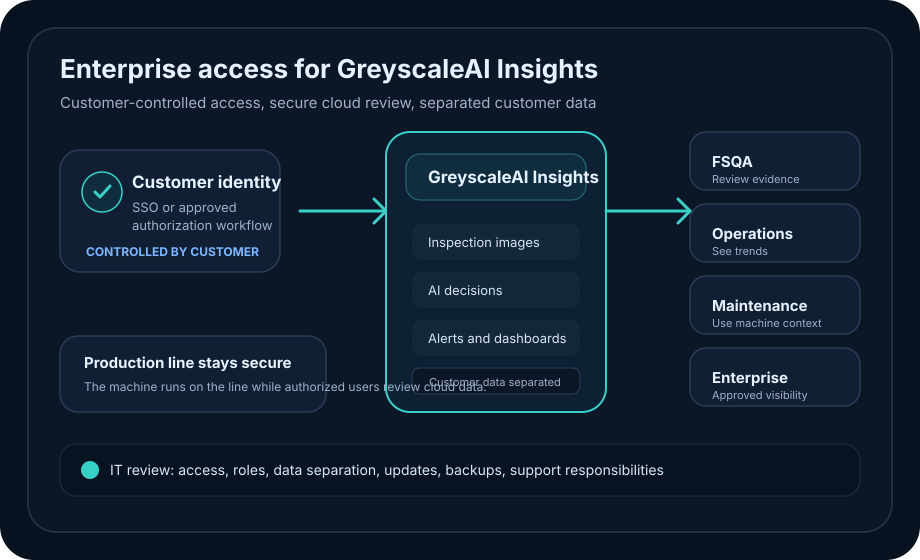

Customer authorization
Use the customer's preferred authorization and access system, including SSO or other approved identity workflows.
GREYSCALEAI INSIGHTS
GreyscaleAI Insights gives authorized customer users a secure cloud application for inspection images, AI decisions, machine context, alerts, dashboards, and QA evidence across approved lines and plants.
Access is controlled through the customer's preferred authorization and access system, so IT teams can review the platform without taking on another local software system to maintain.

ACCESS MODEL
Enterprise teams need access without losing control. GreyscaleAI Insights is built so the customer controls who can reach the application, while GreyscaleAI provides the secure cloud software layer for inspection review, dashboards, alerts, and machine context.
Use the customer's preferred authorization and access system, including SSO or other approved identity workflows.
Roles and permissions control which users can view approved facilities, lines, dashboards, inspection records, alerts, and machine context.
Users review inspection data through GreyscaleAI Insights without installing or maintaining a separate local software stack.
SECURE OPERATING PATH
GreyscaleAI inspection systems are designed to operate securely in production environments while connected Insights data gives approved users visibility into what the machine saw, what the AI decided, and what changed over time.
The inspection system captures image-backed evidence at production speed.
AI decisions and event context are created from the inspection record.
Customer data is separated by customer in the GreyscaleAI cloud environment.
Approved users access the software through customer-controlled authorization.
ENTERPRISE REVIEW
Enterprise deployments involve security and access review. GreyscaleAI is prepared to discuss how the platform connects from machine to cloud, how users are authorized, how data is separated, and how updates and support are handled.
IMPLEMENTATION CONFIDENCE
GreyscaleAI routinely works with customer IT, security, operations, QA, and engineering teams to review how Insights fits into enterprise requirements.
The platform has been implemented with Fortune 500 food producers, where access, security review, machine connectivity, cloud visibility, and production-line operation all matter.
Support security and access conversations before deployment.
Keep the inspection system running securely in the production environment.
Keep the application layer current without adding local maintenance work.
Connect support conversations to the approved platform and access model.
NEXT STEP
Talk with GreyscaleAI about your production environment, access requirements, security review process, software users, and support expectations.